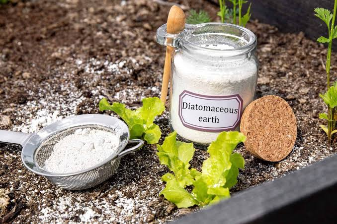
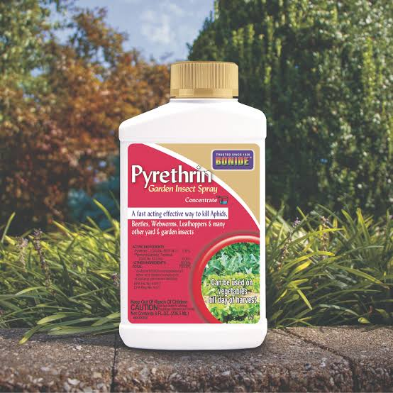
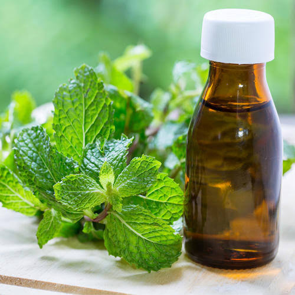

The problem with traditional pesticides is that the chemicals used can endanger the surrounding environment. This can cause serious damage to foliage and animal life in the environment leading to some having to leave their habitat as it is no longer safe. But know this when it comes to us, we can assure you that our methods of pest extermination won’t harm the environment in any manor. We are able to achieve this by using pesticides that can naturally be found in the environment. These pesticides are able to exterminate pests and deter rodents from entering your home, all while being as environmentally safe as possible.

Diatomaceous Earth Is a

Pyrethrin is a

Mentha Piperita is a
And with the use of these chemicals we are able to reduce the harm caused and prevent further damage to the environment.